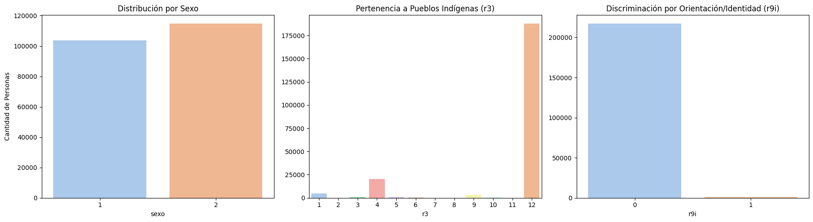
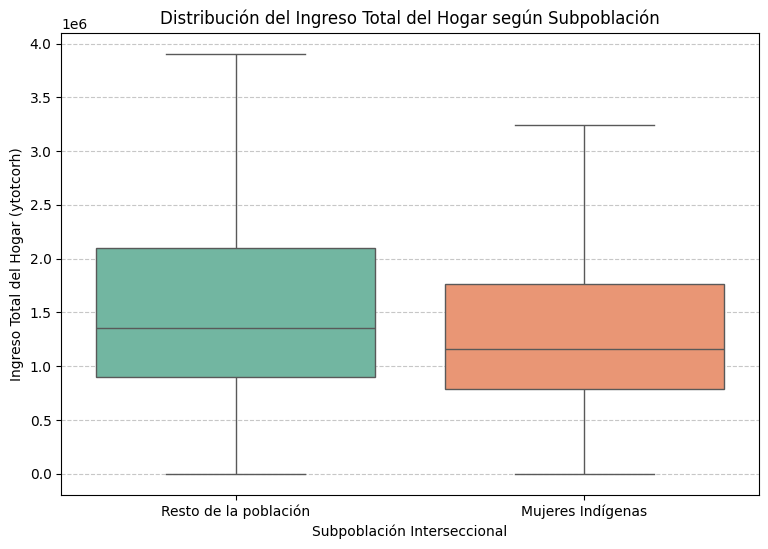
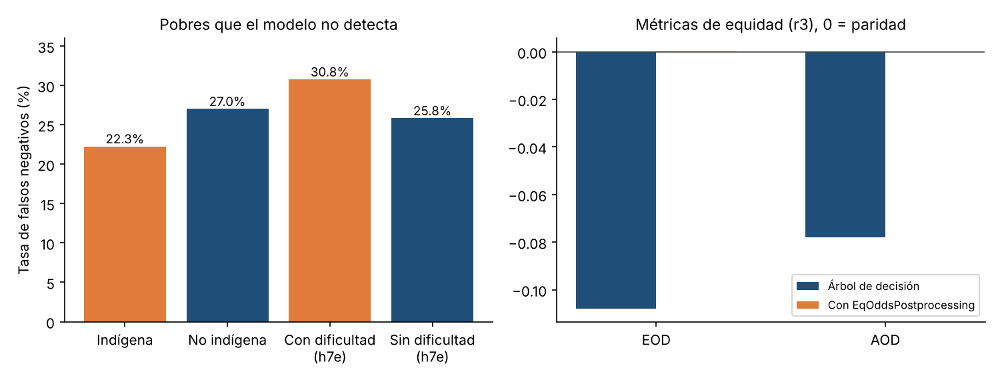
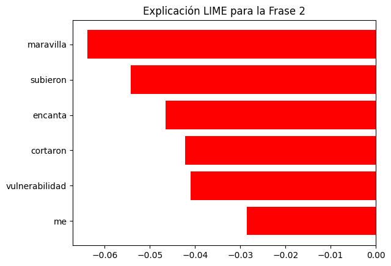
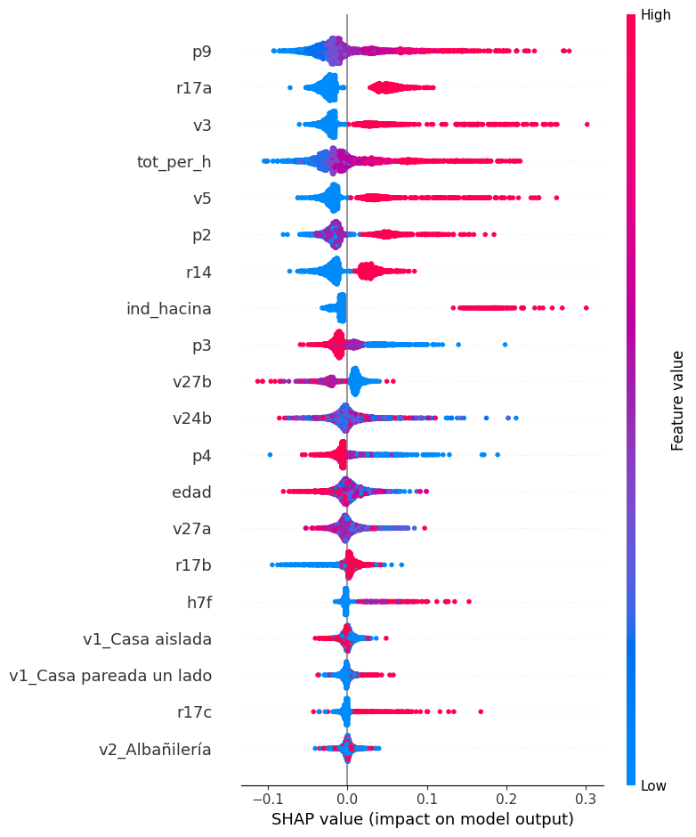
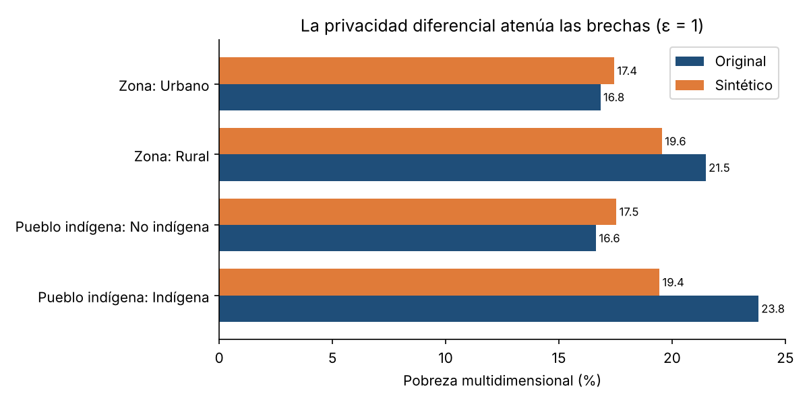
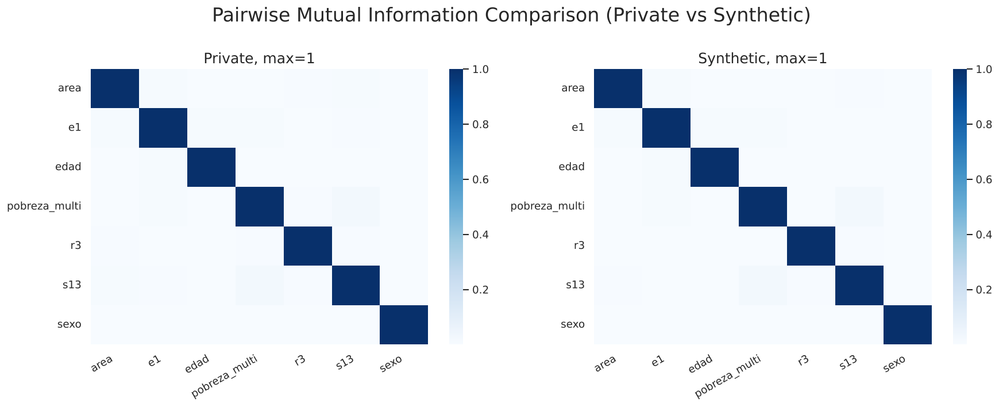

CASEN 2024: ¿quién cuenta y a quién se cuenta?
Proyecto final del semestre. Pontificia Universidad Católica de Chile, 2026.
1. Por qué elegimos CASEN
La Encuesta de Caracterización Socioeconómica Nacional (CASEN) es la principal fuente para medir pobreza y desigualdad en Chile, y de ella depende cómo se distribuyen recursos y políticas públicas. Elegimos este dataset porque lo leemos como una herramienta de visibilidad: muestra quién es contado y cómo, y también quién aparece mal clasificado o no aparece, y por lo tanto queda fuera de la discusión pública y del presupuesto del Estado.
Esa mirada cambia el rol de cada persona encuestada: deja de ser un caso y pasa a ser titular de sus datos, con derechos sobre cómo se usan. Nos importaba el tema porque CASEN incluye variables sensibles (pertenencia a pueblos indígenas, salud, ingresos, territorio) que pueden servir para exigir justicia, pero también para estigmatizar, por ejemplo atribuir la pobreza a una cultura en vez de a la desigualdad estructural.
2. Qué hicimos durante el semestre
El proyecto avanzó en cuatro etapas: explorar los datos (taller 1), entrenar un modelo y medir su justicia (taller 2), explicar modelos y lenguaje con xAI (taller 3) y proteger la privacidad con datos sintéticos (taller 4). En todas partes la pregunta fue la misma: ¿a quién beneficia o perjudica trabajar con CASEN de esta manera?
Taller 1 · Explorar quién aparece en los datos
CASEN 2024 la levanta el Ministerio de Desarrollo Social y Familia junto al INE para estimar la pobreza y orientar presupuestos, subsidios y programas sociales. Revisamos sus variables, identificamos las sensibles (pertenencia a pueblos indígenas, estado nutricional, discriminación por orientación sexual o identidad de género) y eliminamos las columnas con más de 65 % de datos faltantes.

También miramos una subpoblación interseccional: las mujeres indígenas son 7,5 % de la muestra, y su ingreso del hogar tiene una mediana y un percentil 75 claramente más bajos que los del resto de la población. Interpretamos el desbalance como reflejo de la realidad del país y no como un error de medición, pero advertimos que entrenar modelos con él puede deteriorar el rendimiento y hacer que se ignoren las minorías.

Taller 2 · ¿Es justo un modelo que predice la pobreza?
Entrenamos un árbol de decisión para predecir pobreza_multi (preprocesamiento con imputación, recorte de valores extremos, codificación y estandarización; class_weight="balanced" por el desbalance). El accuracy fue de 76 %, pero ese promedio esconde diferencias entre grupos. Con la tasa de falsos negativos (TFN), que mide a las personas pobres que el modelo no detecta, vimos que las personas con dificultad física (h7e) quedan sin detectar en 30,8 % de los casos, frente a 25,8 % de quienes no tienen dificultad. Para pueblos indígenas la TFN fue de 22,3 % frente a 27,0 % en no indígenas. Además, en ambos grupos más de la mitad de las predicciones de pobreza son falsos positivos (TFD sobre 57 %), consecuencia de priorizar no dejar pobres afuera.
Aplicamos EqOddsPostprocessing (AIF360) sobre el atributo r3: la diferencia de oportunidad igualada (EOD) pasó de −0,108 a casi 0 y la de probabilidades promedio (AOD) de −0,078 a casi 0. Como limitaciones, el algoritmo cambia predicciones correctas para equilibrar los errores y necesita conocer el grupo de cada persona, lo que puede ser invasivo con datos sensibles.

Taller 3 · Abrir la caja negra con LIME y SHAP
Probamos dos escenarios. Primero, un sistema que clasifica reclamos al Registro Social de Hogares usando BETO (análisis de sentimientos en español), con diez frases con sarcasmo, jerga chilena y expresiones de precariedad. BETO etiquetó nueve como negativas y una como neutral (la de más jerga), pero LIME mostró que acierta por motivos equivocados: se apoya en palabras de relleno como «y», «ni» o «su», y en frases irónicas se fija en «maravilla» o «encanta», así que fallaría si alguien las usara literalmente. Ahí hay un riesgo ético claro: un sistema así podría dejar sin atención a personas que se expresan con jerga.

Segundo, entrenamos un Random Forest sobre pobreza_multi. Su precisión para «pobre» es 98 %, pero su recall es solo 62 %: hay 4.271 falsos negativos contra 166 falsos positivos, es decir, mucha gente en pobreza quedaría sin ayuda. Con SHAP vimos que pesan más el tamaño del hogar (p9, tot_per_h), el estado material de la vivienda (v3) y el acceso a internet (r17a), coherente con una pobreza que hoy se mide en varias dimensiones. Aun así, SHAP reproduce los sesgos de los datos históricos y no es suficiente por sí solo.

Taller 4 · Proteger sin invisibilizar
Evaluamos CASEN con los seis principios del enfoque de derechos humanos en datos (OHCHR, 2018): participación, desagregación, autoidentificación, transparencia, privacidad y rendición de cuentas. Nuestro balance fue que cumple bien con la transparencia y casi del todo con la desagregación, y solo parcialmente con los demás. Después generamos una versión sintética del dataset, que presentamos a continuación.
3. Visualización central: ¿qué pasa cuando protegemos los datos?
Para el taller 4 generamos una versión sintética de CASEN con DataSynthesizer en modo de atributos correlacionados (privacidad diferencial, ε = 1), usando siete variables: zona, sexo, edad, pertenencia a pueblo indígena, sistema de salud, alfabetismo y pobreza multidimensional. Luego comparamos original y sintético con ModelInspector.

Qué hicimos con esta visualización. Primero verificamos la fidelidad general: las divergencias KL de las variables categóricas son del orden de 10−5 y el estadístico KS de la edad es cercano a 0,006, es decir, el sintético reproduce muy bien las distribuciones. Luego fuimos más allá de los promedios y comparamos la pobreza por subgrupo. Ahí apareció el costo de la privacidad: la brecha entre personas indígenas y no indígenas baja de 23,8 % frente a 16,6 % en el original a 19,4 % frente a 17,5 % en el sintético, y la brecha rural-urbana baja de 21,5 % frente a 16,8 % a 19,6 % frente a 17,4 %.

4. Cómo resolvemos el dilema entre transparencia y privacidad
Proponemos un acceso por niveles. Los datos reales detallados (ubicación exacta del hogar, composición familiar, ingresos y beneficios) solo deberían usarse dentro del Estado o en entornos seguros para investigadores acreditados, con evaluación de impacto, registro de accesos y revisión de resultados. Para publicación abierta, docencia y activismo, deberían usarse versiones generalizadas o sintéticas. Esto se apoya en que pocos atributos demográficos bastan para reidentificar a la mayoría de las personas (Rocher et al., 2019) y en que la normativa chilena (Ley N° 19.628, modificada por la Ley N° 21.719) considera dato personal a lo que solo está anonimizado de forma reversible.
5. Conclusión
Los datos sintéticos permiten abrir CASEN a periodistas, organizaciones y estudiantes sin exponer a ningún hogar, y por eso son una herramienta valiosa para el activismo de datos. Pero la privacidad tiene un costo que no se reparte igual: el sintético suaviza justamente las desigualdades que más nos interesa denunciar, las de los grupos pequeños. Esa limitación es en sí un argumento, y se suma a lo que vimos antes: los grupos pequeños quedan peor representados en la muestra (taller 1), peor detectados por los modelos (talleres 2 y 3) y más difuminados cuando se protege su privacidad (taller 4). En los cuatro casos el error cae sobre quienes ya enfrentan más desigualdad. Pedimos que el Estado publique tabulaciones oficiales por subgrupo con ruido calibrado y documentado, un datasheet público, un registro de usos de los datos, un canal para ejercer derechos sobre ellos y participación vinculante de las comunidades en el diseño del cuestionario. Mientras tanto, cualquier uso del sintético debe decir explícitamente que las brechas reales son mayores.
Material
Referencias
- Office of the United Nations High Commissioner for Human Rights. (2018). A human rights-based approach to data: Leaving no one behind in the 2030 Agenda for Sustainable Development. United Nations.
- Valdovinos Rosas, R. M. et al. (2013). Tratamiento del desbalance en problemas con múltiples clases con ECOC. Computación y Sistemas, 17(4), 583-592.
- Cedeño Menéndez, R. S. (2026). Evaluation of machine learning model performance for sentiment analysis in Spanish tweets under different class imbalance scenarios. LAJC, 13(2), 30-42. https://doi.org/10.33333/lajc.vol13n2.02
- Rocher, L., Hendrickx, J. M., & de Montjoye, Y.-A. (2019). Estimating the success of re-identifications in incomplete datasets using generative models. Nature Communications, 10, Artículo 3069. https://doi.org/10.1038/s41467-019-10933-3
- Ping, H., Stoyanovich, J., & Howe, B. (2017). DataSynthesizer: Privacy-preserving synthetic datasets. Proceedings of the 29th International Conference on Scientific and Statistical Database Management. ACM. https://doi.org/10.1145/3085504.3091117